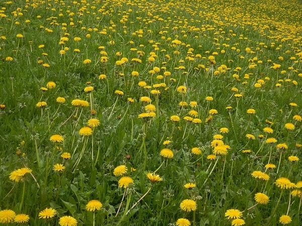

Start with the leaves
Look at the shape, the edge, and where the leaves attach. A rosette is a cluster of leaves at ground level.
A KENTUCKY FIELD GUIDE
Get to know the plants in lawns, gardens, roadsides, and woodland edges. Start with a photo, then look closer at the leaves, flowers, and stems.
Explore the field guide
THE COLLECTION
No matches. Try another trait or clear the filters.
IDENTIFICATION TIPS
Look at the shape, the edge, and where the leaves attach. A rosette is a cluster of leaves at ground level.
See whether it stands upright, creeps along the ground, or roots where it touches soil. Check whether the stem is round or square.
Compare leaves and stems as well as flowers or seed heads. Photograph the whole plant and a close-up for a second look.